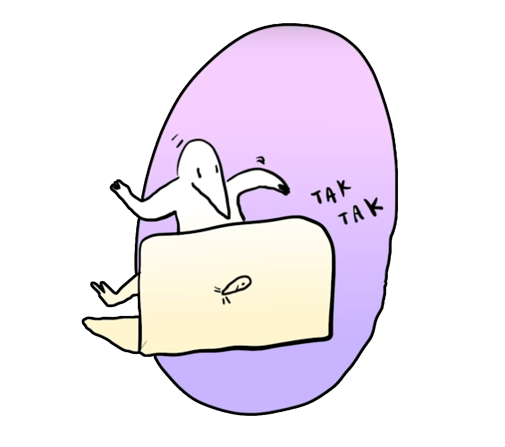
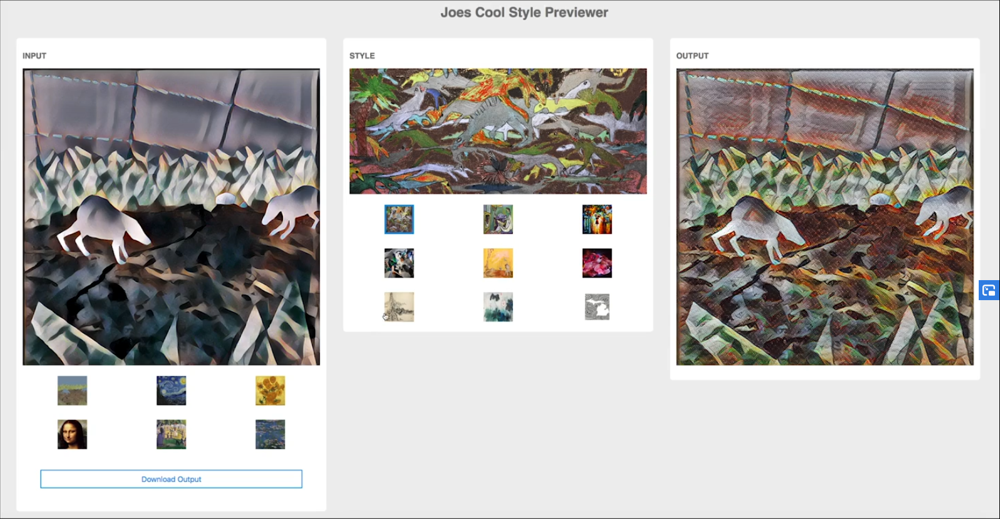

Glop
An animated short experimenting with style transfer onto 3D animation.
Timeline
3 weeks
March 2019
My Role
Motion Capture Artist, developer
Tools
Autodesk Maya, PaperSpace, MotionBuilder, 3D coat, JS/HTML/CSS
For this project, I collaborated with two of my peers, one an animator and another a painter, to create an animated short using style transfer. Style transfer is a technique in machine learning to take the style of one image and apply it to another. We thought to use style transfer to combine a rough 3D animation with a 2D artwork to create a distinct and stylistically cohesive short. Given the short timeline for completion, we utilized motion capture rather than animating by hand.
Style Transfer
At the time of making this project, style transfer was still in its infancy. It was mostly used to show off machine learning’s capabilities, rarely used in video, and never used in animation. I found that style transfer rendered over 3D animation would create a cohesive result without the need for exact 3D models and textures, saving time and effort.
Initial Renders
As the designated developer on my team, I started by using PaperSpace to train style transfer models on my teammates artwork, hoping to approximate her style. I then created a renderer that allowed my team and I to test out various styles layered onto an unlit scene. The goal of this initial rendering tool was to ultimately work out the final animation style we would be using.
Bulk Stylization
The next step was to create a basic tool that could render video frames in bulk. I modified my style previewer to look in a preset folder for numbered animation frames, stylize each frame, and download the finished image. The resulting finished frames could then be stitched back into a ready to use video in Adobe Premiere.

Initial Test Gif
Motion Capture
Using motion capture allowed us to quickly act out takes of the scene instead of animating each frame by hand. We wore motion capture suits and used infrared cameras to track our bodies as we moved.

Mapping the motion capture data from human skeletons to anteater-mole rigs proved to be a little challenging. I used MotionBuilder to overlay the data and then stretched the joints around the head and used reverse kinematics on the knee joints. The whole animation was then ready to be exported into Autodesk Maya.

Human skeleton overlayed on character model.
Scene Staging

Inital scene setup.

Texturing.

Particles and refined textures.